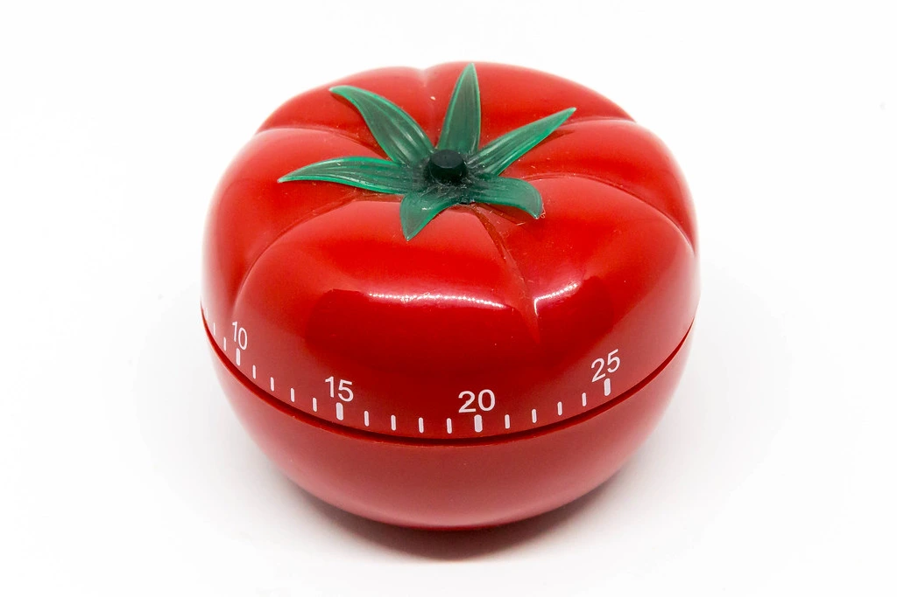

Pomodoro Study Technique - What Is It and Does It Actually Work?

Khyatee Atolia
|
27 June 2022
|
4 Minute Read
What Is The Pomodoro Technique And How to Use It?
The Pomodoro Technique is a time management system method developed by Francesco Cirillo in the 1980s, seemingly during his time at university. This method encourages people to work in the time available and claims to enhance productivity.
Using this method, the time you have allotted to complete a task, be it either studying or working, is broken into 25-minute chunks separated by five-minute breaks. You sit down to study with a timer for 25 minutes during which you focus solely on the task at hand and make it a point to keep away from all distractions, especially electronic devices. After 25 minutes, you take a timed break of five minutes. This 25-minute timer technique was created after a typical cooking alarm of 25 minutes. These five-minute intervals are referred to as Pomodoros, which was inspired by the kitchen alarm that Francesco used to time himself, shaped like a Pomodoro, which is Italian for tomato.
So… Does The Pomodoro Technique Actually Work?
This technique claims to work perfectly well for the people lying at the two extremes: the first ones are those who go about their day believing that they have endless time to complete their work, and they will get to it eventually. The procrastinators, for whom the idea of sitting down and working for hours straight sounds insurmountable.
The other group is the overworked students or corporate workers, who are hooked on to their computers. Those who actually spend four hours working, and flinch at the idea of so much as a break, but get up feeling groggy and frazzled- disoriented. The idea of taking a break, let alone several breaks over the day sounds counterintuitive to them and a hindrance to their productivity.
For the first ones, the bite-sized amount of time that they are committing to sounds doable and it's not overwhelming, after all, it is only 25 minutes. For the workaholics, it forces them to get off and away from the screen and relax their eyes, back and move around for a little bit, as well as providing that needed down time for their brains used to store the information recently learned. Studies have demonstrated that taking regular breaks from work actually improves mental awareness and attentiveness while reducing stress and fatigue.
For everyone- it really increases the focus time, as you want to make sure that the 25 minutes are well used, there is no more checking your feed or responding to notifications- all of that is pushed back for the five minutes at the end of the 25 minutes. No more multitasking, you are completely zoned in on the task at hand. This lack of distractions not only increases the quality of your work produced during that time but also helps to slowly increase your focus and attention span.
How Can We Get The Most Out Of The Pomodoro?
One could also however argue that one of the biggest problems with Pomodoro is that the timer is a consistent interruption that inhibits your ability to get into a zen, fast-working state. It has also been accused of interruptions when someone is fully immersed in their work, engaged, and working.
This is where the flexibility of this technique comes in. The steps are somewhat customizable, with slight changes to break times allowed, as long as the basic structure remains. If you feel like you can work for longer than 25 minutes, perhaps for 40 minutes, there is nothing stopping you from hitting that snooze button and continuing on, finishing the task at hand. It is very much important that you take your five-minute break at the end of your Pomodoro. It is up to you to decide how many times the Pomodoro cycle is repeated. It can be used until a single task is completed or repeated several times throughout an entire workday. After about four Pomodoro, you take a longer break of about 15 to 20 minutes.
After the task is completed in a Pomodoro, the technique suggests that the remaining time should be devoted to work-related activities, for example:
- Review the work that you just completed
- Complete some additional work around the same topic- perhaps there is an additional reading that might aid your understanding
- Review the activities from a learning point of view (ex: What learning objective did you accomplish? Did you fulfill your learning target for the task?)
- Review the list of upcoming tasks for the subsequent Pomodoro time blocks, and start reflecting on or updating them
While this technique has certainly gained its popularity through courses, ebooks, and even apps, the truth is that this method is freely accessible to everyone. It works just as well for students studying for their high school exams and those just starting their first day on a new job. All you need is a timer and 25 minutes, and you’re on your way to producing better work in a shorter time frame.